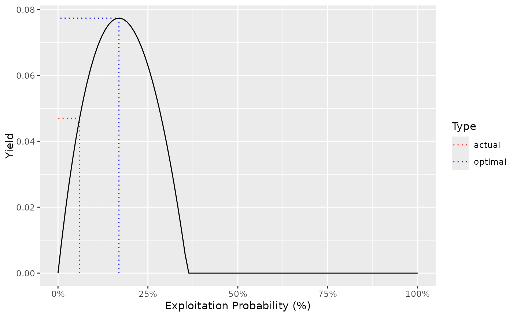

The population parameters for Bull Trout in Adams Lake from Bison et al (2003)
Format
An object of class ypr_population().
References
Bison, R., O’Brien, D., and Martell, S.J.D. 2003. An Analysis of Sustainable Fishing Options for Adams Lake Bull Trout Using Life History and Telemetry Data. BC Ministry of Water Land and Air Protection, Kamloops, B.C.
See also
Other data:
chilliwack_bt_05,
kootenay_bt_13,
kootenay_rb,
kootenay_rb_13,
quesnel_bt,
quesnel_lt,
quesnel_rb
Examples
adams_bt_03
#> tmax: 20
#> k: 0.13
#> Linf: 131
#> t0: 0.2
#> k2: 0.15
#> Linf2: 100
#> L2: 1000
#> Wb: 3.4
#> Ls: 40
#> Sp: 100
#> es: 1
#> Sm: 0
#> fb: 1
#> tR: 1
#> BH: 1
#> Rk: 3.8
#> n: 0.3
#> nL: 0.2
#> Ln: 1000
#> Lv: 40
#> Vp: 5
#> Llo: 0
#> Lup: 1000
#> Nc: 0
#> pi: 0.06
#> rho: 0
#> Hm: 0.15
#> Rmax: 1
#> Wa: 0.01
#> fa: 1
#> q: 0.1
#> RPR: 1
ypr_plot_yield(adams_bt_03)
